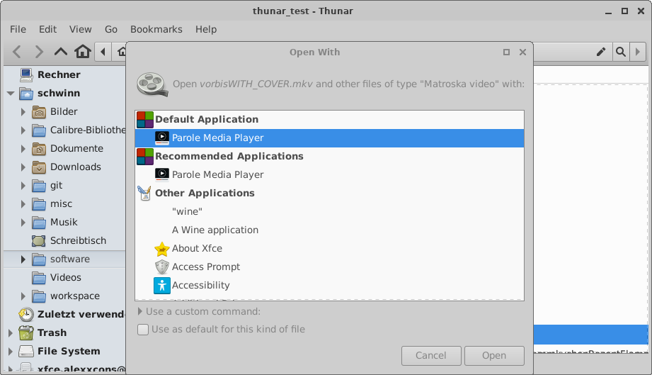

Sep 11,2021
Shiny new things in Thunar thanks to GSoC 2021
GSoC 2021 is over now and I am happy to tell you that both students working on thunar did an excellent job. Alot of nice stuff has been added thanks to them !
In order to allow you to discover all these new features, Thunar 4.17.5 was just released. (Note that this is a development release. It still might have some rough edges)
For details about the new features check the summaries provided by Sergios and Yongha:
Besides these, here as well some more new features added during GSoC for which I thought they would be worth to mention:
Bookmarks got moved into a separate 'Bookmarks Menu' and a 'create bookmark' option was added (MR !109 and MR !71)

A new menu item "Set Default Application" was added to the "Open with" submenu (MR !79)

A new section 'Default Application' was added to the 'thunar-chooser-dialog' (MR !81)
On top there are still various open merge requests with partial finished features, most of them from GSoC students for which I did not find time so far. So expect more new stuff to arrive soon !
You as well might want to keep an eye on xfce4-terminal, which received alot of activity recently, since it is now maintained by Sergios Kefalidis.
If you find a bug on any of these new features, please make use of the xfce bugtracker.
Happy testing !
page sources | © 2022 Alexander Schwinn